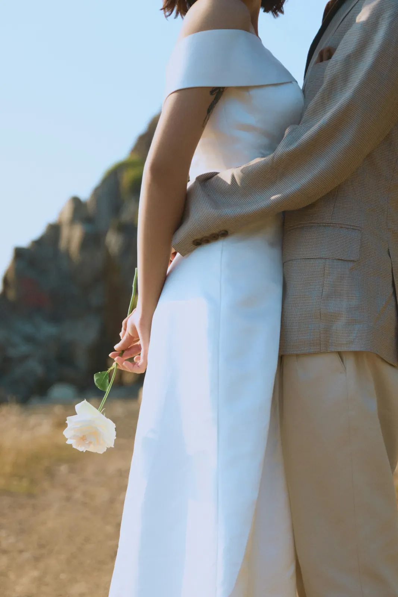

(01)
Weddings
From the first look to the last song. Two photographers, no staged moments, and a finished edit in your hands within six weeks.
- Full-day and elopement coverage
- Second photographer as standard
- Heirloom album on request
